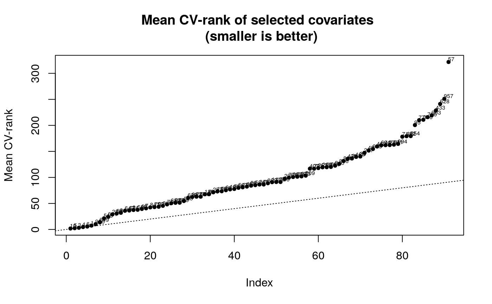
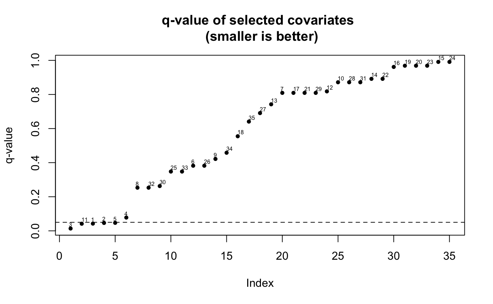

vignettes/differentialExpression.Rmd
differentialExpression.RmdThe adaptest R package can be used to perform data-mining and high-dimensional statistical tests that is common in differential expression studies. The package utilizes a two-stage procedure:
The data-mining stage: reduce the dimension of biomarkers based on the associations of biomarkers with an exposure variable.
The multiple testing stage: adjust for multiple testing to control false positives.
In this vignette, we illustrate how to use adaptest to perform such analysis, using a data set containing microarray expression measures.
First, we load the adaptest package and the (included) simpleArray data set:
In order to construct targeted minimum loss-based estimates for the purpose of hypothesis testing with data-adaptive parameters, we need three separate data structures:
All values in A ought to be binarized, in order to avoid practical violations of the assumption of positivity. To invoke the data-adaptive testing function (adaptest), we also need to specify the number of top biomarkers n_top to the data-mining algorithm, and the number of folds n_fold for cross- validation. The smaller n_top is, the more selective data-mining algorithm we have. The larger n_fold is, more folds are carried our in cross-validation.
The TMLE-based biomarker discovery process can be invoked using the adaptest function. The procedure is quite resource-intensive because it evaluates the association of each individual potential biomarker (of which there are \(1000\) in the included data set) with an exposure of interest, while accounting for potential confounding based on all other covariates included in the design matrix. We demonstrate the necessary syntax for calling adaptest below:
adaptest_out <- adaptest(Y = Y,
A = A,
W = NULL,
n_top = 35,
n_fold = 5,
learning_library = c("SL.glm", "SL.mean"),
parameter_wrapper = adaptest::rank_DE,
absolute = FALSE,
negative = FALSE)The output of adaptest is an object of class data_adapt, containing the following major components:
top_index: (integer vector) - indices for the biomarkers selected by way of data-mining.top_colname: (character vector) - names for the biomarkers selected by way of data-mining.top_colname_significant_q: (character vector) - names for the biomarkers selected by way of data-mining, which are significant after multiple testing stage.DE: (numeric vector) - differential expression effect sizes for the biomarkers in top_colname.p_value: (numeric vector) - p-values for the biomarkers in top_colname.q_value: (numeric vector) - q-values for the biomarkers in top_colname.significant_q: (integer vector) - indices of top_colname which is significant after multiple testing stage.mean_rank_top: (numeric vector) - average ranking across cross-validation folds for the biomarkers in top_colname.folds: (origami::folds class) - object of cross-validation folds.After invoking adaptest, the resultant data_adapt object will have the slots described above completely populated. Note that simply calling objects() on an object of class data_adapt will return more slots than those described above – many of these are auxiliary slots containing information that is likely not of interest to the user. The \(9\) slots given above contain information that summarizes the findings of the data-adaptive hypothesis testing procedure. What’s more, even individually accessing these slots is inconvenient; thus, we provide a summary method to allow the statistical results of this procedure to be extracted easily. We demonstrate this below
## data-adaptive parameters Differential expression p-values
## 1 1 0.597999917 0.0036390849
## 2 2 0.562077504 0.0053032638
## 3 3 0.738512785 0.0003910451
## 4 4 0.466686311 0.0133597241
## 5 5 0.562575573 0.0067052878
## 6 6 0.340545352 0.1354723778
## 7 7 0.118216437 0.5293623032
## 8 8 0.334149607 0.0523051808
## 9 9 -0.295022663 0.1686641287
## 10 10 -0.081931109 0.6598573297
## 11 11 0.655897045 0.0023837050
## 12 12 -0.122985292 0.5610206707
## 13 13 -0.156552060 0.4029517418
## 14 14 -0.065750874 0.7387750268
## 15 15 -0.003383713 0.9875136952
## 16 16 -0.041062298 0.8241596754
## 17 17 -0.122255627 0.5210343651
## 18 18 -0.250678811 0.2536461798
## 19 19 -0.022472769 0.9123796877
## 20 20 -0.022564500 0.9122673463
## 21 21 0.125495321 0.5318335257
## 22 22 -0.060315953 0.7246305162
## 23 23 0.021052867 0.9132666459
## 24 24 0.002261450 0.9909943652
## 25 25 0.332692845 0.1089179334
## 26 26 -0.298364287 0.1418775066
## 27 27 -0.192006372 0.3552636248
## 28 28 0.085360515 0.6723675842
## 29 29 0.123067508 0.5145193129
## 30 30 -0.381642301 0.0675600124
## 31 31 0.088227679 0.6277388171
## 32 32 0.354490171 0.0578489924
## 33 33 -0.285088553 0.1093143193
## 34 34 -0.229211821 0.1963214601
## 35 35 0.210225084 0.3112861519
## q-values
## 1 0.04245599
## 2 0.04640356
## 3 0.01368658
## 4 0.07793172
## 5 0.04693701
## 6 0.38197790
## 7 0.80931189
## 8 0.25308934
## 9 0.42166032
## 10 0.87158761
## 11 0.04171484
## 12 0.81815514
## 13 0.74227952
## 14 0.89162503
## 15 0.99099437
## 16 0.96151962
## 17 0.80931189
## 18 0.55485102
## 19 0.96861614
## 20 0.96861614
## 21 0.80931189
## 22 0.89162503
## 23 0.96861614
## 24 0.99099437
## 25 0.34781829
## 26 0.38197790
## 27 0.69079038
## 28 0.87158761
## 29 0.80931189
## 30 0.26273338
## 31 0.87158761
## 32 0.25308934
## 33 0.34781829
## 34 0.45808341
## 35 0.64088325In the table above, each column provides information about the results of the data-adaptive hypothesis testing procedure. In particular, columns 2-4 provide effect sizes, p-values, and q-values (after multiple testing correction) that may be of interest in scientifically interpreting the findings of the procedure.
As our goal in this vignette is to describe the properties of the adaptest software package and its operation, we omit a discussion of the statistical methodology implemented in this R package. A fully detailed technical account of the data-adaptive multiple testing procedure is available in Cai, Hejazi, and Hubbard (n.d.), presently available on the arxiv. For an introduction to statistical inference procedures using data-adaptive target parameters, the interested reader is directed to Hubbard, Kherad-Pajouh, and van der Laan (2016). For background on the Targeted Learning methodology, as well as recent advances, the canonical references are van der Laan and Rose (2011) and van der Laan and Rose (2018).
This package provides several interpretation methods that can be used to tabular and visualize the results of the data-adaptive tests.
The get_composition method for a adaptest object will produce a table of composition of each data-adaptive parameters that is significant after multiple testing stage:
## [[1]]
## 3 5 10 4 9 1 6 987 257 519 649
## 1 0.2 0.2 0.6 0.0 0.0 0.0 0.0 0.0 0.0 0.0 0.0
## 2 0.2 0.4 0.0 0.4 0.0 0.0 0.0 0.0 0.0 0.0 0.0
## 3 0.2 0.2 0.4 0.0 0.2 0.0 0.0 0.0 0.0 0.0 0.0
## 5 0.4 0.0 0.0 0.0 0.0 0.2 0.2 0.2 0.0 0.0 0.0
## 11 0.0 0.0 0.0 0.2 0.0 0.2 0.0 0.0 0.2 0.2 0.2
##
## [[2]]
## 3 5 10 4 9 1 6 987 257 519 649 q-values
## 1 0.2 0.2 0.6 0.0 0.0 0.0 0.0 0.0 0.0 0.0 0.0 0.04245599
## 2 0.2 0.4 0.0 0.4 0.0 0.0 0.0 0.0 0.0 0.0 0.0 0.04640356
## 3 0.2 0.2 0.4 0.0 0.2 0.0 0.0 0.0 0.0 0.0 0.0 0.01368658
## 5 0.4 0.0 0.0 0.0 0.0 0.2 0.2 0.2 0.0 0.0 0.0 0.04693701
## 11 0.0 0.0 0.0 0.2 0.0 0.2 0.0 0.0 0.2 0.2 0.2 0.04171484Setting the argument type = "big" will instead produce a table of composition of each data-adaptive parameters before multiple testing stage, so that there are more columns. We omit running the code below since the output is large.
The plot method for a adaptest object will produce two plots that help user interpret the results. The first plot is a plot of sorted average CV-rank for all the biomarkers in the original data set (Y). The second plot is a plot of sorted q-values with labels corresponding to the indices of the data-adaptive parameter (as returned in get_composition)

SummarizedExperiment
Now, let’s try to acquire a taste for how we would use these algorithmic tools with objects common in computational biology – we’ll do this by performing the same analysis we did above, but using the core SummarizedExperiment container object and the popular airway data set as an example.
To start, let’s load the required packages:
For simplicity, we’ll restrict ourselves to just a random subset of the genes or transcripts available from the airway data set.
Generally, finding data-adaptive target parameters is a computationally and data-intensive procedure, requiring a fairly large sample size. To work with the relatively small airway data set, we’ll simply augment the data by artificially doubling it in size in a naive manner:
We’ll now extract the variable of interest – a factor label for whether the unit received treatment or not – and coerce it to a binary numeric vector:
# use a binary treatment variable (must be 0/1 only)
dex_var = as.numeric(as.matrix(colData(simple_air))[, 3] - 1)Now, we can perform the same data-adaptive analysis we discussed above on this simplified version of the airway data set, simply by calling the bioadaptest wrapper function:
airway_out <- bioadaptest(data_in = simple_air,
var_int = dex_var,
cntrl_set = NULL,
n_top = 5,
n_fold = 2,
parameter_wrapper = rank_DE)## R version 3.5.1 (2018-07-02)
## Platform: x86_64-pc-linux-gnu (64-bit)
## Running under: Ubuntu 18.04.1 LTS
##
## Matrix products: default
## BLAS: /usr/lib/x86_64-linux-gnu/openblas/libblas.so.3
## LAPACK: /usr/lib/x86_64-linux-gnu/libopenblasp-r0.2.20.so
##
## locale:
## [1] LC_CTYPE=en_US.UTF-8 LC_NUMERIC=C
## [3] LC_TIME=en_US.UTF-8 LC_COLLATE=en_US.UTF-8
## [5] LC_MONETARY=en_US.UTF-8 LC_MESSAGES=en_US.UTF-8
## [7] LC_PAPER=en_US.UTF-8 LC_NAME=C
## [9] LC_ADDRESS=C LC_TELEPHONE=C
## [11] LC_MEASUREMENT=en_US.UTF-8 LC_IDENTIFICATION=C
##
## attached base packages:
## [1] parallel stats4 stats graphics grDevices utils datasets
## [8] methods base
##
## other attached packages:
## [1] airway_0.114.0 SummarizedExperiment_1.10.1
## [3] DelayedArray_0.6.6 BiocParallel_1.14.2
## [5] matrixStats_0.54.0 Biobase_2.40.0
## [7] GenomicRanges_1.32.7 GenomeInfoDb_1.16.0
## [9] IRanges_2.14.12 S4Vectors_0.18.3
## [11] BiocGenerics_0.26.0 nnls_1.4
## [13] adaptest_1.1.0 BiocStyle_2.8.2
##
## loaded via a namespace (and not attached):
## [1] origami_1.0.0 xfun_0.4 listenv_0.7.0
## [4] lattice_0.20-35 colorspace_1.3-2 htmltools_0.3.6
## [7] yaml_2.2.0 rlang_0.3.0.1 pkgdown_1.1.0
## [10] calibrate_1.7.2 GenomeInfoDbData_1.1.0 stringr_1.3.1
## [13] zlibbioc_1.26.0 commonmark_1.6 tmle_1.3.0-1
## [16] future_1.10.0 codetools_0.2-15 memoise_1.1.0
## [19] evaluate_0.12 knitr_1.20 Rcpp_0.12.19
## [22] backports_1.1.2 desc_1.2.0 XVector_0.20.0
## [25] abind_1.4-5 fs_1.2.6 digest_0.6.18
## [28] stringi_1.2.4 bookdown_0.7.21 rprojroot_1.3-2
## [31] grid_3.5.1 tools_3.5.1 bitops_1.0-6
## [34] magrittr_1.5 RCurl_1.95-4.11 crayon_1.3.4
## [37] future.apply_1.0.1 MASS_7.3-51 Matrix_1.2-14
## [40] data.table_1.11.9 xml2_1.2.0 SuperLearner_2.0-24
## [43] assertthat_0.2.0 rmarkdown_1.10 roxygen2_6.1.0.9000
## [46] R6_2.3.0 globals_0.12.4 compiler_3.5.1Cai, Weixin, Nima S Hejazi, and Alan E Hubbard. n.d. “Data-Adaptive Statistics for Multiple Hypothesis Testing in High-Dimensional Settings.” https://arxiv.org/abs/1704.07008.
Hubbard, Alan E, Sara Kherad-Pajouh, and Mark J van der Laan. 2016. “Statistical Inference for Data Adaptive Target Parameters.” The International Journal of Biostatistics 12 (1): 3–19.
van der Laan, Mark J, and Sherri Rose. 2011. Targeted Learning: Causal Inference for Observational and Experimental Data. Springer Science & Business Media.
———. 2018. Targeted Learning in Data Science: Causal Inference for Complex Longitudinal Studies. Springer Science & Business Media.